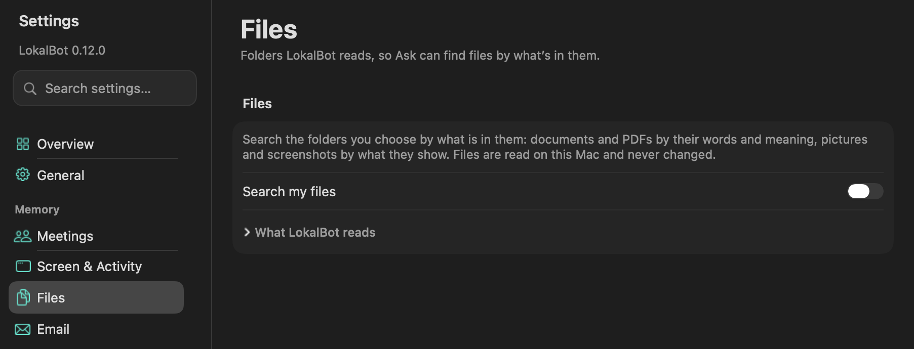

Choose the folders LokalBot may read. It reads the documents, PDFs, pictures, screenshots, recordings and videos in them on your Mac, and Ask, Quick Recall and the Ask assistant can then find a file by what is in it, not only by its name. Nothing leaves your Mac.

Read where they are, never copied, moved or changed.
Each file's path, its text, and a vector of what it says, shows or sounds like, in the LokalBot library. About 3 KB a picture and 8 KB a PDF page.
None for your files. The model LokalBot reads with downloads once, 555 MB for its image part the first time.
The model runs only while new or changed files are read and stops 2 minutes later. Reading pauses while a meeting records, in Low Power Mode and while the Mac is warm.
A folder's first read waits for a charger unless Read big folders on battery is on. New files are still read.
Turning off Search my files deletes the index. Removing a folder removes its files from it.
With Settings → Screen & Activity set to Text + visual context and Settings → Ask → Enable search by meaning on, each screenshot LokalBot keeps also gets a vector of its picture. Screen search then finds a screen by what it showed, not only by its text.
Off by default. In Settings → External Agents, turn on reading your LokalBot data and tick Files (the Files page has the same box). Agents such as Claude Code or Codex can then search your files by their words with lokalbot-cli search-files or the MCP tool search_files.
The Windows and Linux apps don't have Files yet.
A big folder takes minutes to hours the first time, depending on what it holds and your Mac; the Add Folder sheet shows the estimate. It runs in the background, slower while you work, and Settings shows about how long is left. While reading, the model uses about 0.9 GB of memory.
The assistant transcribes a matched recording moment only with a transcription model already on your Mac, and never while a meeting records. A remote transcription server gets the clip only if you approved it, as for meetings.
Source code. Agents search files by their words, not their meaning.